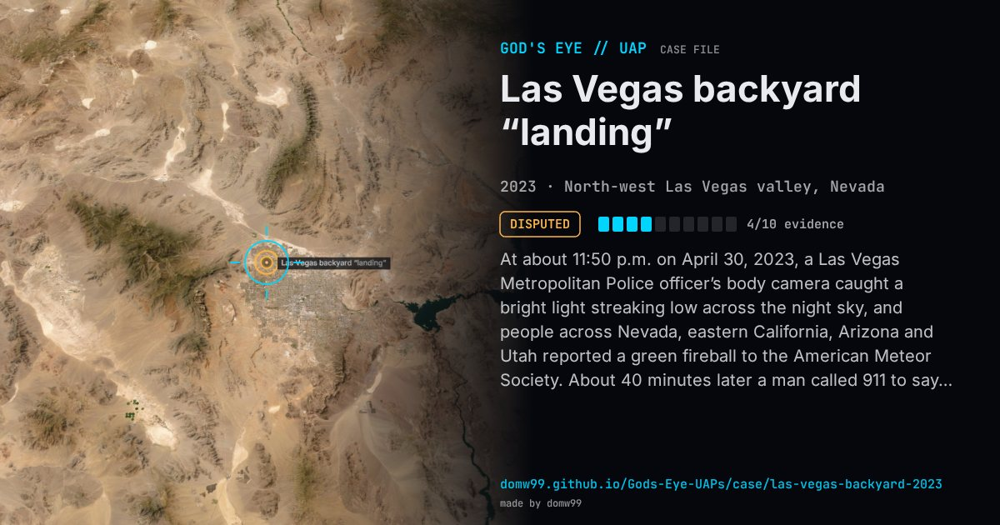

Las Vegas backyard “landing”

At about 11:50 p.m. on April 30, 2023, a Las Vegas Metropolitan Police officer’s body camera caught a bright light streaking low across the night sky, and people across Nevada, eastern California, Arizona and Utah reported a green fireball to the American Meteor Society. About 40 minutes later a man called 911 to say that something had fallen into his backyard in the north-west of the valley and that there were two tall beings “100 percent not human” in it. Officers came, found nothing and closed the call as unfounded; the release of the bodycam footage in June made the story famous, and later drone footage of a circular mark in the dirt was offered as evidence. NASA’s planetary defense office said the light was “certainly” a meteor, less than a metre across.
Explanation
The flash was a bright meteor, according to NASA’s planetary defense office and reports to the American Meteor Society from four states. Nothing supports the “beings”: the police found nothing and closed the call as unfounded.
What was seen
Shape: A green flash streaking low across the sky; the family described tall beings with big eyes
Witnesses: A police officer’s body camera; a family who called 911; skywatchers in four states
Duration: Seconds (the flash); about an hour in all
Sources
- Vice — Did aliens land in Las Vegas? NASA says no (2023)
- 8 News Now — Las Vegas family claims to see aliens after several report something falling from sky (2023)
Browse
- United States
- 2020s
- Disputed
- Close encounters
- Video footage
- Police witnesses
- Audio recordings or radio transcripts
- Lights and fireballs